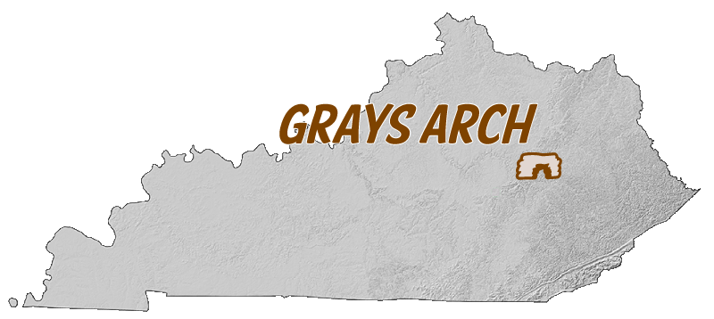

Grays Arch, Red River Gorge
Project by TastyFreeze
Grays Arch is a sandstone arch in the Red River Gorge geological area in Kentucky. The arch is approximately 81-feet high, 100-feet long, and 24-feet wide. The arch formed under a thin ridge from differential weathering and headward erosion of surrounding streams. Neighboring waterfalls and rock house shelters tower over 100 feet in height.
The area is accessible by a well-maintained foot trail that is roughly 1.4 miles from a parking lot trailhead. The hike descends nearly 200 vertical feet with three flights of wooden stairs. Photographers rarely miss the inspiring view here of massive boulders and overhanging cliffs.
Print map for this location

Learn how to work with lidar point clouds
Data sources and methods
The primary sources of data for map and video creation include:
- Lidar point cloud data from the KyFromAbove
- 2016 NAIP aerial color photography from USGS EarthExplorer
- Site visits to arch with handheld camera
The lidar data was processed in ArcGIS Pro to produce a bare-earth DEM. Focal statistic function was used on this DEM to estimate cliff heights and to help produce elevation contours. For the 3D animation, a lidar point cloud was colorized by the aerial image, filtered to include above-ground points, and added to a scene for animation.
This project is part of the Department of Geography, University of Kentucky course GEO 409, Fall 2018.

Winter photograph of arch
Animation centered on arch

Grays Arch in autumn

Flight of stairs on way to arch

360 photograph under arch

Early Spring in Kentucky, John under Grays Arch
- My photographs
- Follow me on twitter @boydshearer
- Visit @boydx
- UKy GIS and Mapping